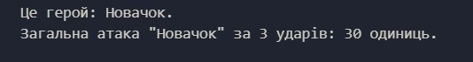
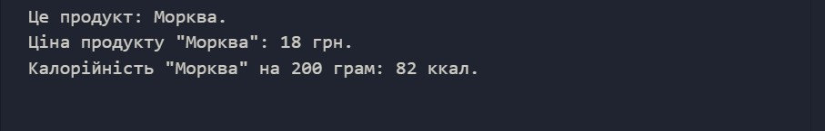
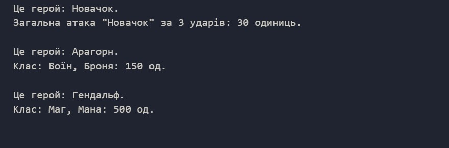
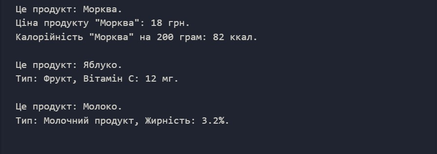
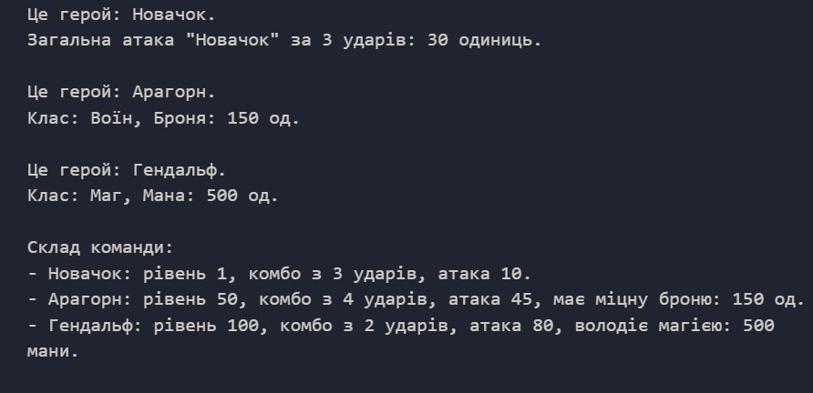

Що таке класи в JavaScript
Клас — це шаблон, за яким ми створюємо схожі об'єкти, замість того, щоб налаштовувати кожен об'єкт окремо.
class НазваКласу {
// Тут буде опис властивостей та методів
}constructor() {}
constructor — це спеціальний метод для налаштування об'єкта. Ключове слово this означає "цей конкретний об'єкт".
class НазваКласу {
constructor(параметр1, параметр2) {
this.властивість1 = параметр1; // Зберігаємо дані
this.властивість2 = параметр2;
}
}Методи
Це функції всередині класу. Вони визначають, що об'єкт вміє робити.
class НазваКласу {
constructor(параметр1, параметр2) {
this.властивість1 = параметр1;
this.властивість2 = параметр2;
}
назваМетоду1() {
// Дія, яку виконує об'єкт
console.log(`Привіт, я маю властивості ${this.властивість1} та ${this.властивість2}!`);
}
назваМетоду2() {
// Ще одна дія, яку вміє виконувати об'єкт...
}
}new (створення об'єктів)
Команда new бере наш "шаблон" (клас) і створює реальний об'єкт у пам'яті комп'ютера. Цей об'єкт має доступ до всіх методів класу.
// Створення об'єкта на основі класу
const мійОбєкт = new НазваКласу("Дані", 100);
мійОбєкт.назваМетоду1() // викликаємо перший методПриклад
Базовий клас для створення героя гри, який вміє говорити своє ім'я (метод info()) та бити ворога (calculateTotalDamage()).
// --- Частина 1: Основи (Герой) ---
class Hero {
constructor(name, level, damagePerHit, hitsCount) {
this.name = name; // Ім'я
this.level = level; // Рівень
this.damagePerHit = damagePerHit; // Шкода за один удар
this.hitsCount = hitsCount; // Кількість ударів у комбо
}
info() {
console.log(`Це герой: ${this.name}.`);
}
calculateTotalDamage() {
// Рахуємо загальну шкоду: сила удару x кількість ударів
let totalDamage = this.damagePerHit * this.hitsCount;
console.log(
`Загальна атака ${this.name} за ${this.hitsCount} ударів: ${totalDamage} одиниць.`,
);
}
}
const basicHero = new Hero("Новачок", 1, 10, 3);
basicHero.info();
basicHero.calculateTotalDamage();
console.log();Результат:
Очікуваний результат:
Частина 1.1 (+ 20 балів):
- Створити клас з назвою Product.
-
У класі створити constructor, який приймає 4
параметри:
- name (назва продукту)
- price (ціна)
- caloriesPer100g (калорійність на 100 г)
- weight (вага в грамах)
Частина 1.2 (+ 15 балів):
-
Додати метод info(), який виводить у консоль фразу:
Це продукт: [назва],
замінивши слова в [] на значення властивостей класу (наприклад, на this.name) -
Додати метод showPrice(), який виводить у консоль:
Ціна продукту "[назва]": [ціна] грн.
Частина 1.3 (+ 15 балів):
-
Додати метод showCalories(), який має:
-
Порахувати загальні калорії за формулою:
this.caloriesPer100g / 100 * this.weight
(результат обчислень зберегти у змінній result) -
Вивести у консоль:
Калорійність "[назва]" на [вага] грам: [результат] ккал
-
Порахувати загальні калорії за формулою:
Частина 1.4 (+ 10 балів):
-
Створити змінну carrot та записати в неї новий
(new) об'єкт класу Product із такими
даними:
- "Морква" (назва)
- 18 (ціна)
- 41 (калорійність)
- 200 (вага)
- Викликати для моркви всі три методи (info, showPrice, showCalories), щоб перевірити роботу коду.
Наслідування (Inheritance)
Це спосіб створити новий клас на основі вже існуючого. Новий клас (дочірній) автоматично отримує всі "вміння" (методи) та властивості батьківського класу. Це дозволяє не писати один і той самий код двічі.
extends
Ключове слово, яке створює зв'язок між класами. Воно означає "розширює". Ми кажемо програмі: "Створи цей новий клас як розширену версію старого".
class Собака extends Тварина {
// Собака отримує все, що має Тварина + свої особливості
}super()
Це "дзвінок батькам". У конструкторі дочірнього класу ми обов'язково викликаємо super(), щоб передати загальні дані (наприклад, ім'я) батьківському класу для збереження.
constructor(name, speed) {
super(name); // Віддаємо ім'я батьківському класу
this.speed = speed; // Швидкість зберігаємо тут
}Приклад
Два класи — Воїн (Warrior) та Маг (Mage) — які наслідують клас Hero. Воїн носить важкі обладунки (armor), а Маг має магічну енергію (mana).
// ... (код з Частини 1: клас Hero)
// --- Частина 2: Класи персонажів (Воїн та Маг) ---
class Warrior extends Hero {
constructor(name, level, damagePerHit, hitsCount, armor) {
super(name, level, damagePerHit, hitsCount); // Передаємо дані "батьку"
this.armor = armor; // Унікальна властивість: Броня
this.type = "Воїн";
}
}
class Mage extends Hero {
constructor(name, level, damagePerHit, hitsCount, mana) {
super(name, level, damagePerHit, hitsCount);
this.mana = mana; // Унікальна властивість: Мана
this.type = "Маг";
}
}
const aragorn = new Warrior("Арагорн", 50, 45, 4, 150);
aragorn.info(); // Має доступ до методів з батьківського класу
console.log(`Клас: ${aragorn.type}, Броня: ${aragorn.armor} од.\n`);
const gandalf = new Mage("Гендальф", 100, 80, 2, 500);
gandalf.info();
console.log(`Клас: ${gandalf.type}, Мана: ${gandalf.mana} од.\n`);Результат:
Очікуваний результат:
Частина 2.1 (+ 8 балів):
- Створити клас Fruit, який наслідує клас Product (використати ключове слово extends).
-
У класі Fruit створити constructor,
який приймає 5 параметрів:
- 4 стандартні (name, price, caloriesPer100g, weight).
- 1 новий: vitaminCContent (вміст вітаміну С).
-
Всередині конструктора Fruit:
- Викликати super(...) і передати йому 4 стандартні параметри.
- Зберегти новий параметр у властивість this.vitaminCContent.
- Створити властивість this.type і записати в неї текст "Фрукт".
Частина 2.2 (+ 8 балів):
- Створити клас DairyProduct, який теж наслідує клас Product.
-
У конструкторі DairyProduct додати новий параметр
fatContent (жирність), викликати
super та записати:
- Жирність у властивість this.fatContent.
- У властивість this.type записати текст "Молочний продукт".
Частина 2.3 (+ 5 балів):
-
Створити змінну apple через
new Fruit із даними:
- "Яблуко" (назва)
- 25 (ціна)
- 52 (калорії)
- 150 (вага)
- 12 (вітамін С)
- Викликати apple.info() та окремим console.log вивести його тип (apple.type) та вміст вітаміну C.
Частина 2.4 (+ 5 балів):
-
Створити змінну milk через
new DairyProduct із даними:
- "Молоко" (назва)
- 30 (ціна)
- 60 (калорії)
- 250 (вага)
- 3.2 (жирність)
- Викликати milk.info() та окремим console.log вивести його тип та жирність.
if / else if / else
Це спосіб навчити програму приймати рішення. "Якщо (if) умова правдива — роби це, інакше (else) — роби інше".
if (герой === "Маг") {
// Код для мага
} else {
// Код для всіх інших
}Функції
Це блок коду, який можна використовувати багато разів. Функція може приймати дані (параметри), щось з ними робити та видавати результат.
function привітання(ім'я) {
console.log(`Привіт, ${ім'я}!`);
}Масиви
Це спеціальний тип даних, схожий на список або коробку, де ми можемо зберігати багато речей під однією назвою. Масиви створюються через квадратні дужки [].
let герої = [герой1, герой2, герой3];Ітерація по масиву (for ... of)
Щоб обробити кожен елемент у списку по черзі, ми використовуємо цикл. Конструкція for (let герой of герої) читається як: "Для кожного героя зі списку героїв зроби наступне...".
for (let герой of герої) {
// Цей код виконається для кожного героя окремо
герой.info();
}Приклад
Функція, яка приймає як параметр масив з різними героями, і виводить у консоль інформацію про кожного з них, перевіряючи їхній тип.
// ... (код з Частини 1 та 2)
// --- Частина 3: Команда та Логіка ---
function displayTeamInfo(heroes) {
console.log("Склад команди:");
// ітерація по масиву:
for (let hero of heroes) {
// Базовий рядок
let result = `- ${hero.name}: рівень ${hero.level}, комбо з ${hero.hitsCount} ударів, атака ${hero.damagePerHit}`;
// Логіка для різних класів
if (hero.type === "Воїн") {
result += `, має міцну броню: ${hero.armor} од.`;
} else if (hero.type === "Маг") {
result += `, володіє магією: ${hero.mana} мани.`;
} else {
result += ".";
}
console.log(result);
}
}
let myTeam = [basicHero, aragorn, gandalf]; // масив зі всіма героями
displayTeamInfo(myTeam);Результат:
Очікуваний результат:

Частина 3.1 (+ 10 балів):
- Створити функцію displayProductsInfo, яка приймає один параметр — масив products.
-
Всередині функції спершу вивести в консоль заголовок:
"Вміст кошика:" . - Створити цикл for...of, щоб пройтися по кожному product (продукту) із переданого масиву products.
-
Всередині циклу створити змінну result і записати в
неї базовий рядок із загальною інформацією (яка є у всіх):
[назва]: ціна [ціна] грн, вага [вага] г, калорійність [калорійність] на 100 г. -
Додати перевірку типу продукту (if / else if / else), щоб дописати унікальні дані до рядка result:
-
Якщо тип продукту "Фрукт" — дописати вміст вітаміну С
(result += `...`). - Інакше, якщо тип продукту "Молочний продукт" — дописати відсоток жирності.
- Інакше (для решти продуктів) — просто дописати крапку ".".
-
Якщо тип продукту "Фрукт" — дописати вміст вітаміну С
- Вивести фінальний рядок result у консоль.
Частина 3.2 (+ 4 бали):
- Поза функцією створити масив myProducts і покласти в нього всі три наші об'єкти (carrot, apple, milk).
- Викликати функцію displayProductsInfo і передати їй цей масив.